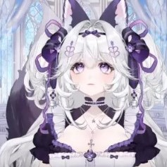
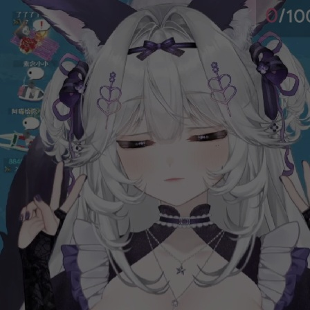
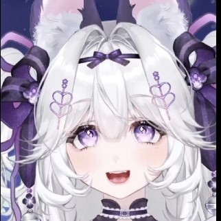

热 烈 祝 贺
桃 宫 も も
满 月 快 乐
  
祝
桃宫もも小姐（稀薄麗亞大以巴哈哈戚/地雷系钢铁反骨狐/紫色萨摩耶）
满月，
大v进度
1%
!, 一个月不到就3000粉！
本人分米不打天天蒽陪伴要被主播狠狠切割力。但是本人还是由衷希望主播不要忘记自己的 steam 密码，因为今天也是
主播忘记 steam 密码的半月回
（愿每个steam账号都能被记住密码💔）。
虽然主包从来不会念我 id 😭，但是哥们霹雳霹雳直播区外号少说十几个所以哥们也不在意捏。毕竟主包在直播上还是十分甚至九分的努力，
很喜欢主包说的一句话：“快让我加班！”
最后，
热烈恭祝主包满月快乐，向一周年回冲击，vamos！
最后的最后，可以
大火 50 让大火彻底疯狂吗
storage